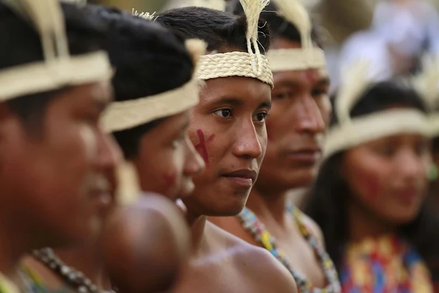
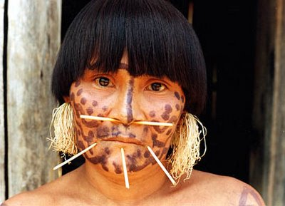
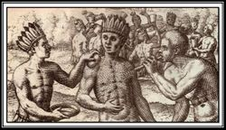

Contexto Histórico
Los llanos venezolanos, mucho antes de la llegada de los colonizadores europeos y la posterior consolidación de la cultura llanera ganadera, fueron un vasto mosaico cultural habitado por diversas naciones indígenas.
Imagenes


